각 페이지의 폰트 가독성, 하부 페이지 상단 버튼·메뉴, 분석 완료 페이지의 이미지 상태(깨짐) 세 축을 UX 관점에서 점검하고 개선했습니다. 실행 중인 앱을 실제 데이터(완료된 newface_v1 작업, 197장 입력 / 30장 유지, 라이브 A6000 GPU 2장)로 렌더해 캡처했습니다.
캡처 방식: 원본/개선 두 빌드를 각각 구동 후 headless Chromium(2x DPR, 다크)으로 동일 스크립트 캡처. 스크린샷의 데이터셋 이미지는 사용자 소유 자료이므로 외부에 게시하지 않고 리포지토리 내 로컬 문서로만 보관합니다.
| 영역 | 심각도 | 문제 | 개선 | 상태 |
|---|---|---|---|---|
| 이미지 | 높음 | 썸네일/원본 파일이 없거나 이동되면 브라우저 기본 깨진 이미지 아이콘 노출 (리뷰 모드는 리젝트를 이동/삭제하므로 상시 발생) | onError 폴백 컴포넌트 — "이미지 없음 / 이동됨" 플레이스홀더 + 파일명, 로딩 스피너 | 적용 |
| 이미지 | 높음 | 리뷰 갤러리가 전체(수백~수천 장)를 한 번에 렌더 → 문서 높이 10,652px, 초기 렉/메모리 | 60장 단위 "더 보기" 점진 렌더 (초기 3,576px로 축소) | 적용 |
| 이미지 | 중간 | 이미지 API가 no-store로 캐시 차단 → 스크롤/재방문마다 재다운로드; 일부 포맷(gif/tiff/avif/heic) 미지원 → 깨짐 | 썸네일 캐시 허용(max-age), 포맷 맵 확장 | 적용 |
| 상단 버튼 | 높음 | TopBar가 줄바꿈·truncate 없음 → 긴 제목 + 다수 버튼이 세로 붕괴/화면 밖 넘침 (좁은 폭·폰트 변화 시 심화) | 제목 truncate, 컨트롤 flex-wrap·shrink-0, 높이 가변 | 적용 |
| 상단 버튼 | 높음 | 파괴적 "삭제"가 중립 회색 버튼 → 오클릭 위험, 위험 신호 없음 | danger(빨강) 스타일 + 휴지통 아이콘 + aria-label | 적용 |
| 상단 버튼 | 중간 | 버튼에 키보드 포커스 링 없음(접근성), 아이콘 버튼 라벨 없음, 토글 타깃 24px | focus-visible 링, aria-label/aria-pressed, 토글 32px | 적용 |
| 폰트 | 중간 | 실시간 갱신 숫자(GPU %·VRAM·step)가 비례폭이라 2.5초마다 좌우로 떨림 | 해당 수치에 tabular-nums 적용 | 적용 |
| 폰트 | 중간 | 다크 배경에서 한글 렌더가 두껍고 뭉개짐; badge 11px로 과소 | -webkit-font-smoothing:antialiased 등, badge 12px 상향 | 적용 |
| 일관성 | 낮음 | 사이드바 로고 이모지(🖼️)가 두부(□)로 깨짐; 상태 뱃지 보더 불일치; Help 언어 토글이 CTA처럼 보임 | lucide 아이콘 교체; 뱃지 보더 통일; 토글 선택 스타일 분리 | 적용 |
curation/runs/…)를 가리키는데, 소스가 app/ 아래로 이동(curation/app/curation/runs/…)하면서 경로가 어긋나 API가 404를 반환합니다. 파일 자체는 존재합니다.curation/runs → curation/app/curation/runs)를 적용해 아래 개선 스크린샷의 썸네일을 복원했습니다. 근본 해결(잡 생성 시 상대경로 저장 또는 DB 마이그레이션)은 별도 권장 항목입니다.
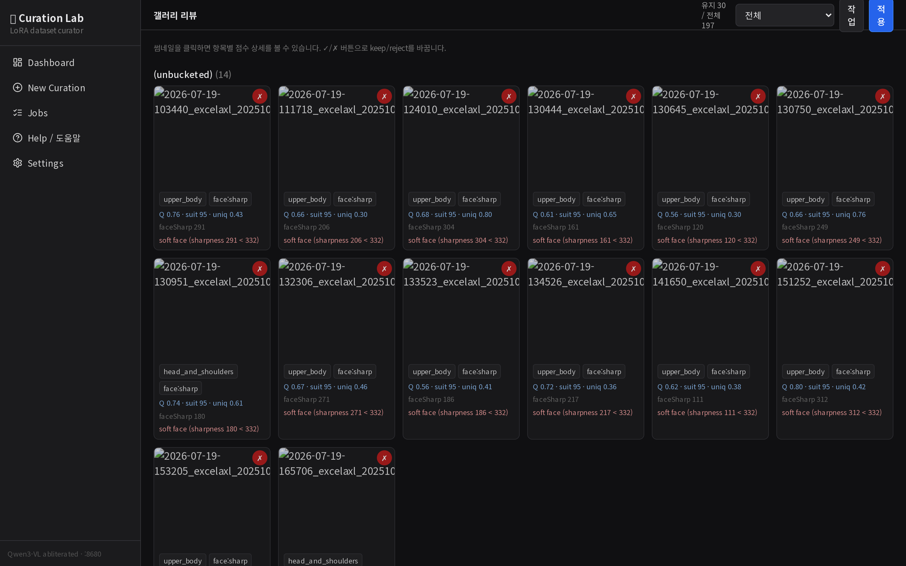
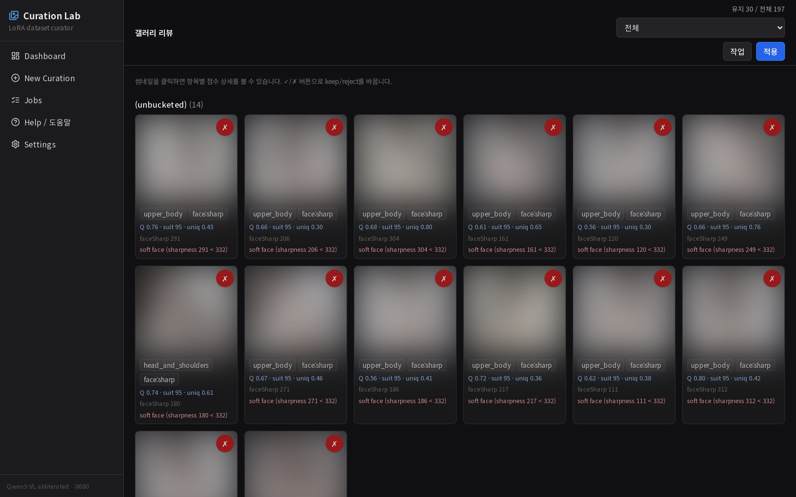
※ AFTER 갤러리의 썸네일 사진은 개인정보 보호를 위해 블러 처리했습니다(데이터셋 이미지 비공개). UI·배지·점수·레이아웃은 실제 그대로입니다.
aria-label 및 포커스 링 추가.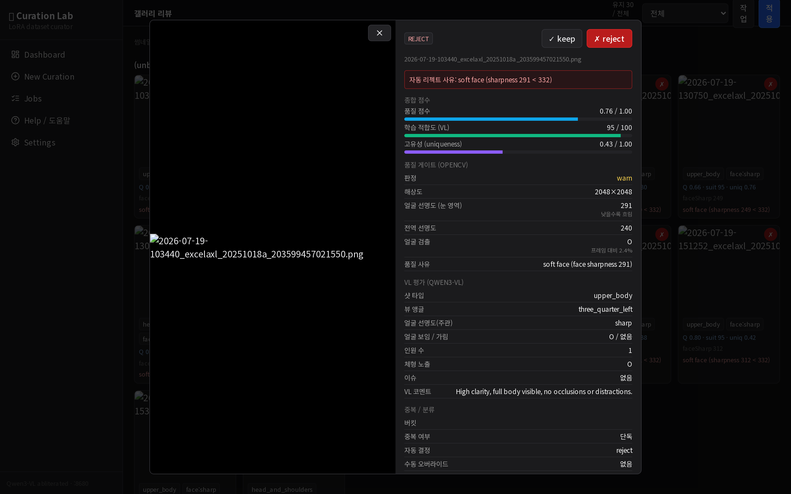
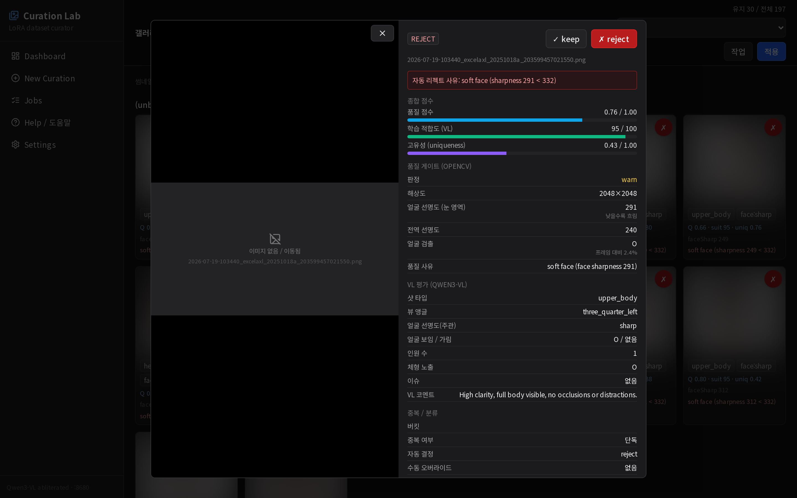
이 모달은 원본 전체 해상도를 로드합니다. 해당 이미지는 리젝트되어 newface_v1_rejected/로 이동된 상태라 원본이 실제로 없습니다. BEFORE는 깨진 글리프를 그대로 노출하지만, AFTER는 파일이 없어도 우아하게 폴백합니다 — 즉 개선 효과가 데이터 존재 여부와 무관하게 입증됩니다.
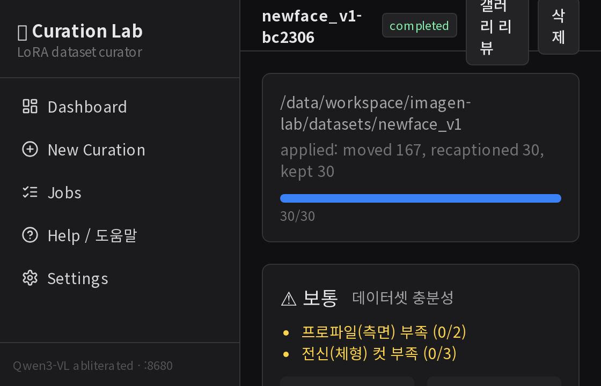
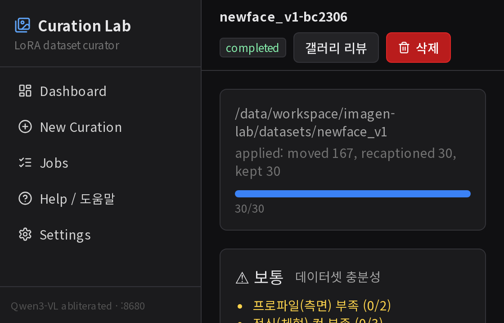
min-w-0 truncate, 컨트롤 shrink-0 + flex-wrap로 폭·폰트 변화를 흡수..btn에 focus-visible 링(키보드 접근성), 비활성 스타일 추가.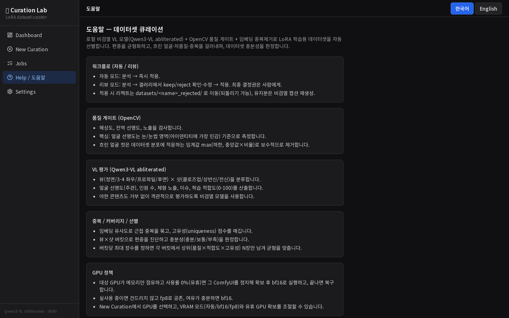
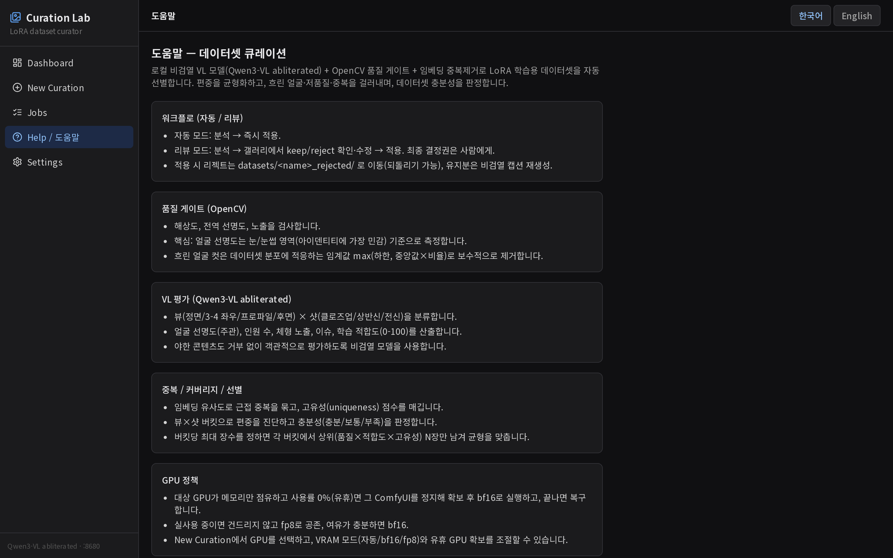
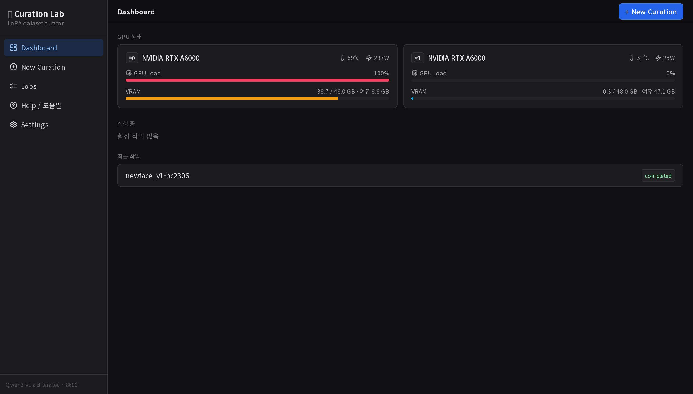
tabular-nums → 폭 흔들림 제거.-webkit-font-smoothing:antialiased · text-rendering:optimizeLegibility로 한글 획 선명화..badge 11px → 12px, 깨지던 이모지 로고를 lucide Images 아이콘으로 교체.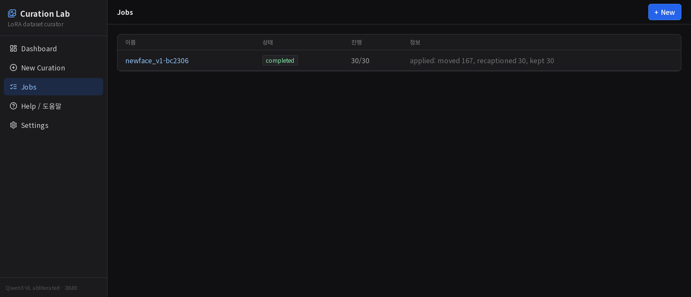
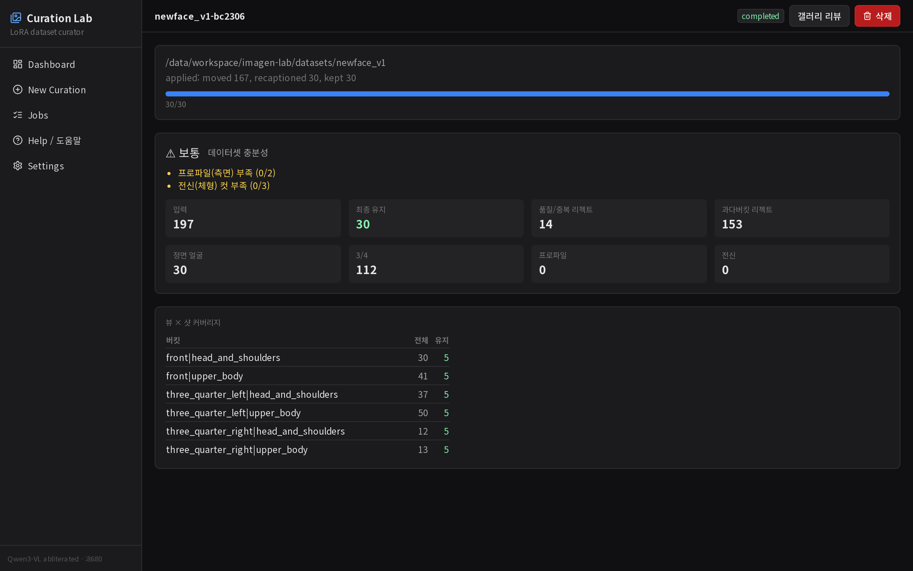
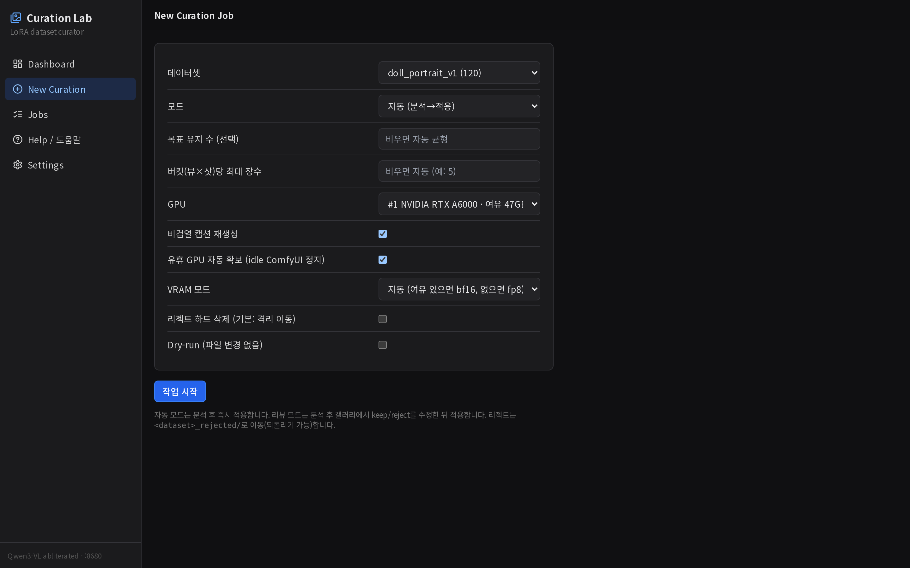
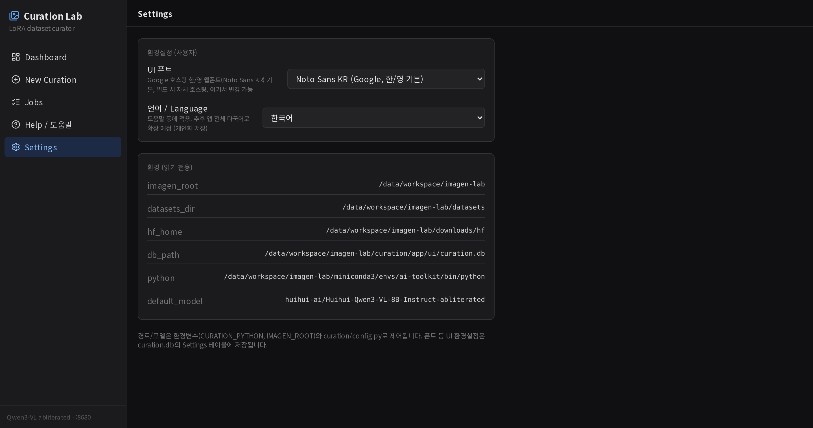
| 파일 | 변경 내용 |
|---|---|
src/components/ImageWithFallback.tsx | 신규 — onError 플레이스홀더 + 로딩 스피너 이미지 래퍼 |
src/app/globals.css | antialiased·focus 링·disabled·.tnum·badge 12px |
src/components/TopBar.tsx | 제목 truncate, 컨트롤 wrap/shrink, 가변 높이 |
src/app/review/[jobID]/page.tsx | 폴백 이미지, 60장 페이징, 토글 32px+aria, tnum |
src/components/ImageDetail.tsx | 폴백 이미지, aria-label/pressed, tnum |
src/app/api/img/route.ts | 포맷 맵 확장, 캐시 헤더 |
src/components/Sidebar.tsx | 🖼️ 이모지 → lucide Images 아이콘 |
src/components/StatusBadge.tsx | queued/stopped 보더 통일 |
src/components/GpuStatus.tsx | 실시간 수치 tnum |
src/app/dashboard/page.tsx | GPU 칩·step tnum |
src/app/jobs/[jobID]/page.tsx | 삭제 danger+아이콘, step/stat tnum |
src/app/help/page.tsx | 언어 토글 선택 스타일 + aria-pressed |
next.config.mjs | distDir env 스위치(캡처용 별도 빌드; 기본값 .next 유지) |
report_dir/thumb_path를 절대경로 대신 IMAGEN_ROOT 상대경로로 저장하거나, 기존 DB를 마이그레이션. (현재 심링크는 임시조치)sharp로 JPEG 트랜스코드 필요.thumb_path가 비어 원본을 로드하는 경우 서버측 축소.